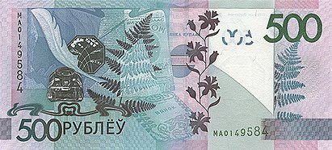
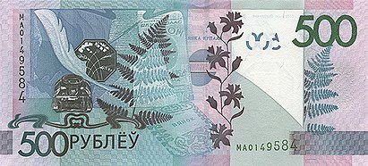

Краткая информация
Год выпуска:
2009
Введена в обращение:
1 июля 2016 года
Размер банкноты:
159 x 72 мм
Банкнота посвящена Минску. Соответствие области номиналу банкноты было определено по русскому алфавиту
Ещё банкноты из этой серии


Описание
На лицевой стороне изображена Национальная библиотека республики, на оборотной — коллаж, посвящённый теме литературы (перо, чернильница, обложки книг, лист папоротника). Слева от основного изображения на незапечатанном поле расположен полутоновый водяной знак, повторяющий фрагмент основного изображения лицевой стороны
банкноты. По центру сверху вниз проходит металлизированная защитная нить. Для слабовидящих в левом нижнем углу находится геометрическая фигура имеет увеличенную толщину красочного слоя. Фрагменты изображения номинала вверху слева на лицевой и вверху справа на оборотной сторонах банкнот совмещаются на просвет, образуя цельное изображение номинала банкнот. Вверху незапечатанного поля помещены надписи «Старшыня Праўлення» и «2009», а также факсимиле подписи на тот момент главы Нацбанка П. Прокоповича.
 
